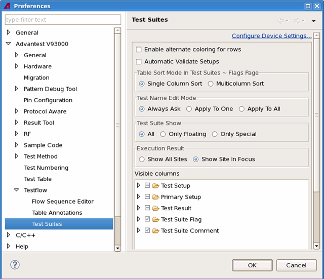

Test Suites preference page
You can change the following preferences on the preference page.
Option |
Description |
|---|---|
Enable alternate coloring for rows |
Controls whether to show the background of the rows in the Flow Data Editor in two colors, white and gray. |
Automatic Validate Setups |
Check this option, the setup file which has not been loaded and the primary set which does not exist will be highlighted in yellow on the Test suites page and the Properties view. |
Table Sort Mode in Test Suites ~ Flags Page |
Specify whether the data on Test Suites page to Flags page are sorted either on single column or on multiple columns. |
Test Name Edit Mode |
Specify what happens when you select a different test method in one of the linked test suites in a testflow.
|
Test Suite Show |
Specify which types of test suites are displayed on the Test suites page.
|
Execution Result |
Specify the results of either all the sites or the site in focus are to be shown. |
Visible Columns |
Specify the columns which are displayed in the Test Suite page. |
The following displays the Test Suites preference page.

Functional changes
- Introduced in SmarTest 6.5.2
- SmarTest 6.5.4: Add the option Enable alternate coloring for rows
- SmarTest 6.5.4: Change Test Function Name Edit Mode to Test Name Edit mode